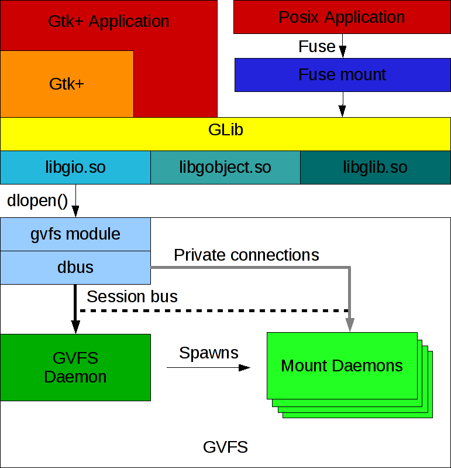

Overview
Overview
GIO is striving to provide a modern, easy-to-use VFS API that sits at the
right level in the library stack, as well as other generally useful APIs
for desktop applications (such as networking and D-Bus support). The goal
is to overcome the shortcomings of GnomeVFS and provide an API that is so
good that developers prefer it over raw POSIX calls. Among other things
that means using GObject. It also means not cloning the POSIX API, but
providing higher-level, document-centric interfaces.
The abstract file system model of GIO consists of a number of interfaces and base classes for I/O and files:
GFile- reference to a file
GFileInfo- information about a file or filesystem
GFileEnumerator- list files in directories
GDrive- represents a drive, which may contain zero or more volumes
GVolume- represents a file system, which may have a mount
GMount- represents a mounted file system
Then there is a number of stream classes, similar to the input and output stream hierarchies that can be found in frameworks like Java:
GInputStream- read data
GOutputStream- write data
GIOStream- read and write data
GSeekable- interface optionally implemented by streams to support seeking
There are interfaces related to applications and the types of files they handle:
GAppInfo- information about an installed application
GIcon- abstract type for file and application icons
There is a framework for storing and retrieving application settings:
GSettings- stores and retrieves application settings
There is support for network programming, including connectivity monitoring, name resolution, low-level socket APIs and high-level client and server helper classes:
GSocket- low-level platform independent socket object
GResolver- asynchronous and cancellable DNS resolver
GSocketClient- high-level network client helper
GSocketService- high-level network server helper
GSocketConnection- network connection stream
GNetworkMonitor- network connectivity monitoring
There is support for connecting to D-Bus, sending and receiving messages, owning and watching bus names, and making objects available on the bus:
GDBusConnection- a D-Bus connection
GDBusMethodInvocation- for handling remote calls
GDBusServer- helper for accepting connections
GDBusProxy- proxy to access D-Bus interfaces on a remote object
Beyond these, GIO provides facilities for file monitoring, asynchronous I/O and filename completion. In addition to the interfaces, GIO provides implementations for the local case. Implementations for various network file systems are provided by the GVFS package as loadable modules.
Other design choices which consciously break with the GnomeVFS design are to move backends out-of-process, which minimizes the dependency bloat and makes the whole system more robust. The backends are not included in GIO, but in the separate GVFS package. The GVFS package also contains the GVFS daemon, which spawn further mount daemons for each individual connection.

The GIO model of I/O is stateful: if an application establishes e.g. a SFTP connection to a server, it becomes available to all applications in the session; the user does not have to enter their password over and over again.
One of the big advantages of putting the VFS in the GLib layer is that GTK can directly use it, e.g. in the file chooser.
Writing GIO applications
The information in the GLib documentation about writing GLib applications is generally applicable when writing GIO applications.
Threads
GDBus has its own private worker thread, so applications using GDBus have at least 3 threads. GIO makes heavy use of the concept of a thread-default main context to execute callbacks of asynchronous methods in the same context in which the operation was started.
Asynchronous Programming
Many GIO functions come in two versions: synchronous and asynchronous,
denoted by an _async suffix. It is important to use these appropriately:
synchronous calls should not be used from within a main loop which is shared
with other code, such as one in the application’s main thread. Synchronous
calls block until they complete, and I/O operations can take noticeable
amounts of time (even on ‘fast’ SSDs). Blocking a main loop iteration while
waiting for I/O means that other sources in the main loop will not be
dispatched, such as input and redraw handlers for the application’s UI. This
can cause the application to ‘freeze’ until I/O completes.
A few self-contained groups of functions, such as code generated by
gdbus-codegen, use a different convention: functions are asynchronous
default, and it is the synchronous version which has a _sync suffix. Aside
from naming differences, they should be treated the same way as functions
following the normal convention above.
The asynchronous (_async) versions of functions return control to the
caller immediately, after scheduling the I/O in the kernel and adding a
callback for it to the main loop. This callback will be invoked when the
operation has completed. From the callback, the paired _finish function
should be called to retrieve the return value of the I/O operation, and any
errors which occurred. For more information on using and implementing
asynchronous functions, see GAsyncResult and GTask.
By starting multiple asynchronous operations in succession, they will be executed in parallel (up to an arbitrary limit imposed by GIO’s internal worker thread pool).
The synchronous versions of functions can be used early in application startup when there is no main loop to block, for example to load initial configuration files. They can also be used for I/O on files which are guaranteed to be small and on the local disk. Note that the user’s home directory is not guaranteed to be on the local disk.
Security
When your program needs to carry out some privileged operation (say, create a new user account), there are various ways in which you can go about this:
- Implement a daemon that offers the privileged operation. A convenient way to do this is as a D-Bus system-bus service. The daemon will probably need ways to check the identity and authorization of the caller before executing the operation. polkit is a framework that allows this.
- Use a small helper that is executed with elevated privileges via
pkexec.pkexecis a small program launcher that is part of polkit. - Use a small helper that is executed with elevated privileges by being SUID root.
None of these approaches is the clear winner, they all have their advantages and disadvantages.
When writing code that runs with elevated privileges, it is important to follow some basic rules of secure programming. David Wheeler has an excellent book on this topic, Secure Programming for Linux and Unix HOWTO.
When using GIO in code that runs with elevated privileges, you have to be careful. GIO has extension points whose implementations get loaded from modules (executable code in shared objects), which could allow an attacker to sneak their own code into your application by tricking it into loading the code as a module. However, GIO will never load modules from your home directory except when explicitly asked to do so via an environment variable.
In most cases, your helper program should be so small that you don’t need GIO, whose APIs are largely designed to support full-blown desktop applications. If you can’t resist the convenience of these APIs, here are some steps you should take:
- Clear the environment, e.g. using the
clearenv()function. David Wheeler has a good explanation for why it is important to sanitize the environment. See the section on running GIO applications for a list of all environment variables affecting GIO. In particular,PATH(used to locate binaries),GIO_EXTRA_MODULES(used to locate loadable modules) andDBUS_{SYSTEM,SESSION}_BUS_ADDRESS(used to locate the D-Bus system and session bus) are important. - Don’t use GVfs, by setting
GIO_USE_VFS=localin the environment. The reason to avoid GVfs in security-sensitive programs is that it uses many libraries which have not necessarily been audited for security problems. Gvfs is also heavily distributed and relies on a session bus to be present.
Compiling GIO applications
GIO comes with a gio-2.0.pc file that you should use together with
pkg-config to obtain the necessary information about header files and
libraries. See the pkg-config man page or the
GLib documentation for more
information on how to use pkg-config to compile your application.
If you are using GIO on Unix-like systems, you may want to use Unix-specific
GIO interfaces such as GUnixInputStream, GUnixOutputStream, GUnixMount
or GDesktopAppInfo. To do so, use the gio-unix-2.0.pc file as well as
gio-2.0.pc (or, in GIR namespace terms, GioUnix-2.0 as well as Gio-2.0).
Running GIO applications
GIO inspects a few environment variables in addition to the ones used by GLib.
XDG_DATA_HOME,XDG_DATA_DIRS. GIO uses these environment variables to locate MIME information. For more information, see the Shared MIME-info Database and the Base Directory Specification.GVFS_DISABLE_FUSE. This variable can be set to keep Gvfs from starting the fuse backend, which may be unwanted or unnecessary in certain situations.GIO_USE_VFS. This environment variable can be set to the name of a GVfs implementation to override the default for debugging purposes. The GVfs implementation for local files that is included in GIO has the namelocal, the implementation in the GVfs module has the namegvfs. Most commonly, system software will set this tolocalto avoid havingGFileAPIs perform unnecessary D-Bus calls. The special valuehelpcan be used to print a list of available implementations to standard output.
The following environment variables are only useful for debugging GIO itself or modules that it loads. They should not be set in a production environment.
GIO_USE_FILE_MONITOR. This variable can be set to the name of aGFileMonitorimplementation to override the default for debugging purposes. TheGFileMonitorimplementation for local files that is included in GIO on Linux has the nameinotify, others that are built are built as modules (depending on the platform) are calledkqueueandwin32. The special valuehelpcan be used to print a list of available implementations to standard output.GIO_USE_VOLUME_MONITOR. This variable can be set to the name of aGVolumeMonitorimplementation to override the default for debugging purposes. TheGVolumeMonitorimplementation for local files that is included in GIO has the nameunix, the udisks2-based implementation in the GVfs module has the nameudisks2. The special valuehelpcan be used to print a list of available implementations to standard output.GIO_USE_MEMORY_MONITOR. This variable can be set to the name of aGMemoryMonitorimplementation to override the default for debugging purposes. The available implementations included in GIO have the namesdbus,portalandwin32. The special valuehelpcan be used to print a list of available implementations to standard output.GIO_USE_NETWORK_MONITOR. This variable can be set to the name of aGNetworkMonitorimplementation to override the default for debugging purposes. The available implementations included in GIO have the namesnetlink,networkmanagerandportal. The special valuehelpcan be used to print a list of available implementations to standard output.GIO_USE_POWER_PROFILE_MONITOR. This variable can be set to the name of aGPowerProfileMonitorimplementation to override the default for debugging purposes. The available implementations included in GIO have the namesdbusandportal. The special valuehelpcan be used to print a list of available implementations to standard output.GIO_USE_TLS. This variable can be set to the name of aGTlsBackendimplementation to override the default for debugging purposes. GIO does not include aGTlsBackendimplementation — the GnuTLS-based implementation in the glib-networking module has the namegnutls. The special valuehelpcan be used to print a list of available implementations to standard output.GIO_USE_PORTALS. This variable can be set to override detection of portals and force them to be used to provide various bits of GIO functionality, for testing and debugging. This variable is not intended to be used in production.GIO_MODULE_DIR. When this environment variable is set to a path, GIO will load modules from this alternate directory instead of the directory built into GIO. This is useful when running tests, for example. This environment variable is ignored when running in a SUID program.GIO_EXTRA_MODULES. When this environment variable is set to a path, or a set of paths separated by a colon, GIO will attempt to load additional modules from within the path. This environment variable is ignored when running in a SUID program.GNOTIFICATION_BACKEND. This variable can be set to the name of aGNotificationBackendimplementation to override the default for debugging purposes. The implementations that are included in GIO have the namesfreedesktop,cocoa,gtkandportal. The special valuehelpcan be used to print a list of available implementations to standard output.GSETTINGS_BACKEND. This variable can be set to the name of aGSettingsBackendimplementation to override the default for debugging purposes. The memory-based implementation that is included in GIO has the namememory, the one in dconf has the namedconf. The special valuehelpcan be used to print a list of available implementations to standard output.GSETTINGS_SCHEMA_DIR. This variable can be set to the names of directories to consider when looking for compiled schemas forGSettings, in addition to theglib-2.0/schemassubdirectories of the XDG system data directories. To specify multiple directories, useG_SEARCHPATH_SEPARATOR_Sas a separator.DBUS_SYSTEM_BUS_ADDRESS. This variable is consulted to find the address of the D-Bus system bus. For the format of D-Bus addresses, see the D-Bus specification. Setting this variable overrides platform-specific ways of determining the system bus address.DBUS_SESSION_BUS_ADDRESS. This variable is consulted to find the address of the D-Bus session bus. Setting this variable overrides platform-specific ways of determining the session bus address.DBUS_STARTER_BUS_TYPE. This variable is consulted to find out the ‘starter’ bus for an application that has been started via D-Bus activation. The possible values aresystemorsession.G_DBUS_DEBUG. This variable can be set to a list of debug options, which cause GLib to print out different types of debugging information when using the D-Bus routines.transport: Show I/O activity (e.g. reads and writes)message: Show all sent and received D-Bus messagespayload: Show payload for all sent and received D-Bus messages (implies message)call: Traceg_dbus_connection_call()andg_dbus_connection_call_sync()API usagesignal: Show when a D-Bus signal is receivedincoming: Show when an incoming D-Bus method call is receivedreturn: Show when a reply is returned via theGDBusMethodInvocationAPIemission: Traceg_dbus_connection_emit_signal()API usageauthentication: Show information about connection authenticationaddress: Show information about D-Bus address lookups and autolaunchingall: Turn on all debug optionshelp: Print a list of supported options to the standard outputG_DBUS_COOKIE_SHA1_KEYRING_DIR. Can be used to override the directory used to store the keyring used in theDBUS_COOKIE_SHA1authentication mechanism. Normally the directory used is.dbus-keyringsin the user’s home directory.G_DBUS_COOKIE_SHA1_KEYRING_DIR_IGNORE_PERMISSION. If set, the permissions of the directory used to store the keyring used in theDBUS_COOKIE_SHA1authentication mechanism won’t be checked. Normally the directory must be readable only by the user.
Extending GIO
A lot of the functionality that is accessible through GIO is implemented in
loadable modules, and modules provide a convenient way to extend GIO. In
addition to the GIOModule API which supports writing such modules, GIO has a
mechanism to define extension points, and register implementations thereof,
see GIOExtensionPoint.
The following extension points are currently defined by GIO:
G_VFS_EXTENSION_POINT_NAME. Allows to override the functionality of theGVfsclass. Implementations of this extension point must be derived fromGVfs. GIO uses the implementation with the highest priority that is active, seeg_vfs_is_active(). GIO implements this extension point for local files, gvfs contains an implementation that supports all the backends in gvfs.G_VOLUME_MONITOR_EXTENSION_POINT_NAME. Allows to add more volume monitors. Implementations of this extension point must be derived fromGVolumeMonitor. GIO uses all registered extensions. gvfs contains an implementation that works together with theGVfsimplementation in gvfs.G_NATIVE_VOLUME_MONITOR_EXTENSION_POINT_NAME. Allows to override the ‘native’ volume monitor. Implementations of this extension point must be derived fromGNativeVolumeMonitor. GIO uses the implementation with the highest priority that is supported, as determined byGVolumeMonitorClass.is_supported(). GIO implements this extension point for local mounts, gvfs contains a udisks2-based implementation.G_LOCAL_FILE_MONITOR_EXTENSION_POINT_NAME. Allows to override the file monitor implementation for local files. Implementations of this extension point must be derived fromGLocalFileMonitor. GIO uses the implementation with the highest priority that is supported, as determined byGLocalFileMonitorClass.is_supported(). GIO uses this extension point internally, to switch between its poll-based and inotify-based file monitoring implementations.G_LOCAL_DIRECTORY_MONITOR_EXTENSION_POINT_NAME. Allows to override the directory monitor implementation for local files. Implementations of this extension point must be derived fromGLocalDirectoryMonitor. GIO uses the implementation with the highest priority that is supported, as determined byGLocalDirectoryMonitorClass.is_supported(). GIO uses this extension point internally, to switch between its poll-based and inotify-based directory monitoring implementations.G_DESKTOP_APP_INFO_LOOKUP_EXTENSION_POINT_NAME. Unix-only. Allows to provide a way to associate default handlers with URI schemes. Implementations of this extension point must implement theGDesktopAppInfoLookupinterface. GIO uses the implementation with the highest priority. This extension point has been discontinued in GLib 2.28. It is still available to keep API and ABI stability, but GIO is no longer using it for default handlers. Instead, the MIME handler mechanism is used, together withx-scheme-handlerpseudo-MIME-types.G_NOTIFICATION_BACKEND_EXTENSION_POINT_NAME. Allows to provide an alternative implementation for sending notifications. Implementations of this extension point must derive from theGNotificationBackendtype. GIO contains implementations based on the freedesktop notification D-Bus interface, the macOS Cocoa API, the gnome-shell D-Bus API, and the desktop portal for this functionality.G_SETTINGS_BACKEND_EXTENSION_POINT_NAME. Allows to provide an alternative storage forGSettings. Implementations of this extension point must derive from theGSettingsBackendtype. GIO contains a keyfile-based implementation of this extension point, another one is provided by dconf.G_PROXY_EXTENSION_POINT_NAME. Allows to provide implementations for network proxying. Implementations of this extension point must provide theGProxyinterface, and must be named after the network protocol they are proxying. glib-networking contains an implementation of this extension point based on libproxy.G_TLS_BACKEND_EXTENSION_POINT_NAME. Allows to provide implementations for TLS support. Implementations of this extension point must implement theGTlsBackendinterface. glib-networking contains an implementation of this extension point.G_NETWORK_MONITOR_EXTENSION_POINT_NAME. Allows to provide implementations for network connectivity monitoring. Implementations of this extension point must implement theGNetworkMonitorinterface. GIO contains implementations of this extension point that use the netlink interface of the Linux kernel, the NetworkManager D-Bus interface and the desktop portal for this functionality.G_MEMORY_MONITOR_EXTENSION_POINT_NAME. Allows to provide implementations for memory usage monitoring. Implementations of this extension point must implement theGMemoryMonitorinterface. GIO contains implementations of this extension point that use theorg.freedesktop.LowMemoryMonitorD-Bus interface, the Windows API and the desktop portal for this functionality.G_POWER_PROFILE_MONITOR_EXTENSION_POINT_NAME. Allows to provide implementations for power usage monitoring. Implementations of this extension point must implement theGPowerProfileMonitorinterface. GIO contains implementations of this extension point that use thenet.hadess.PowerProfilesD-Bus interface and the desktop portal for this functionality.